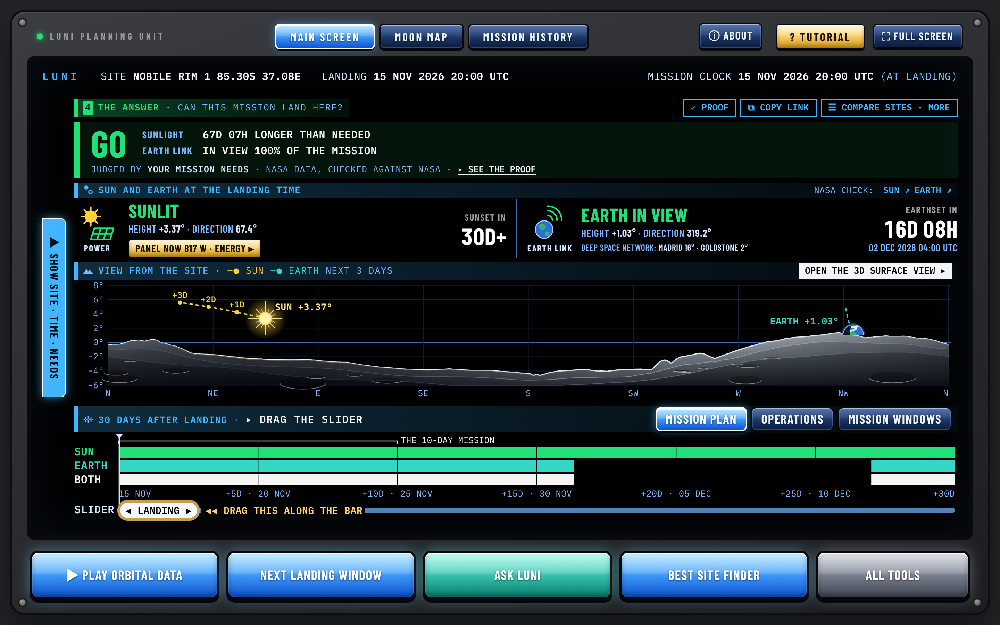
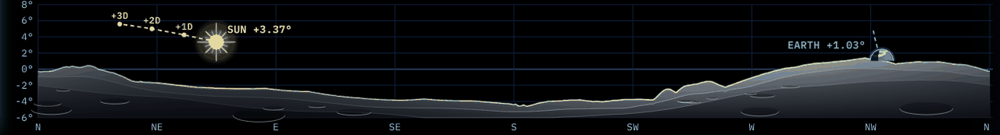
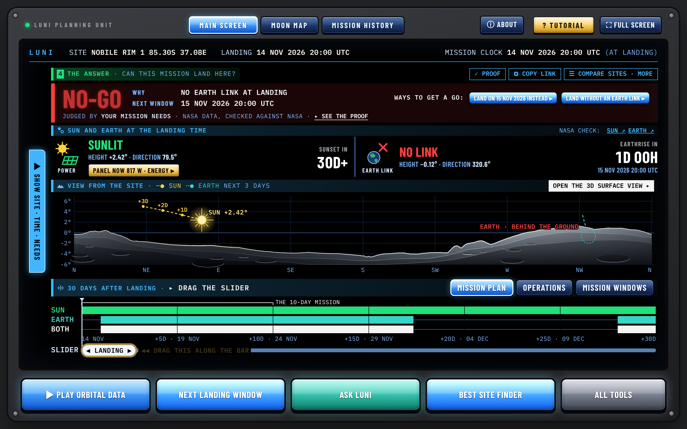
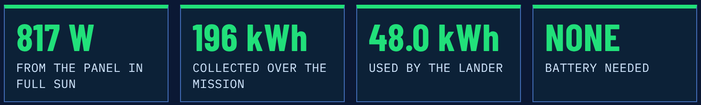
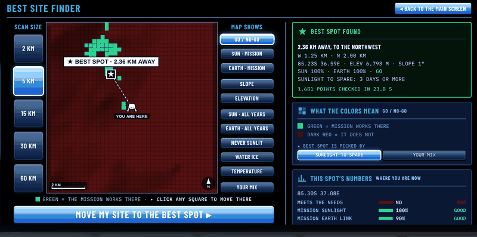
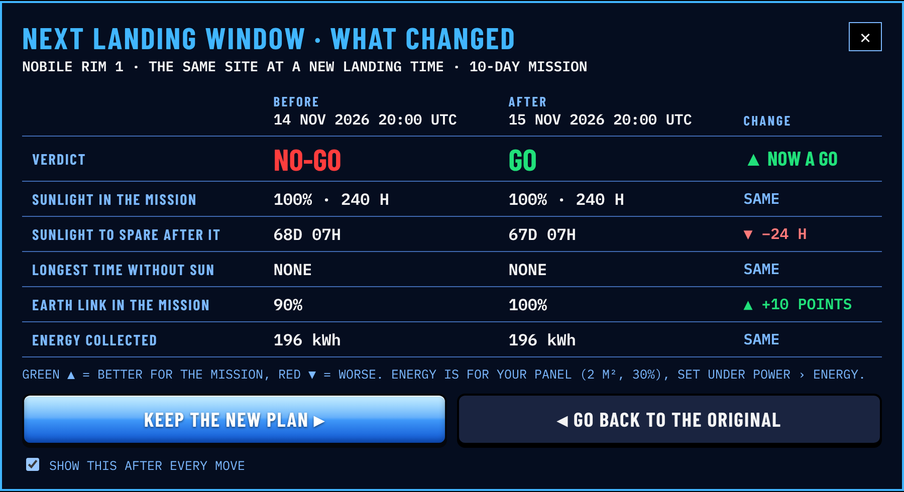
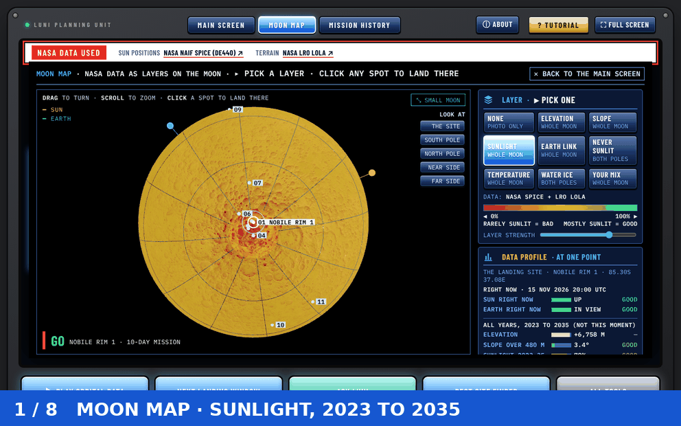
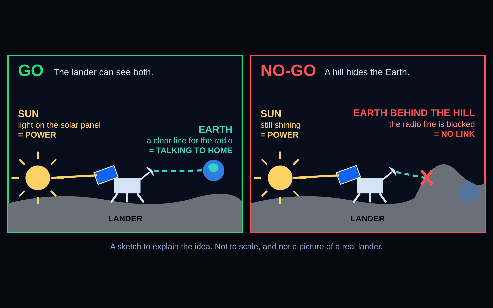

WHO IT IS FOR
Mission planners re-checking a slipped launch. Teachers and students. Anyone curious: ASK LUNI answers a typed or spoken question.

NASA SPACE APPS CHALLENGE 2026
LUNAR LANDING SITE NAVIGATOR
Lunar Utility for Navigational Intelligence
Can this mission land here, at this time? A clear GO or NO-GO from NASA data, with the reason and the way out. Tested by first-time users, ready for a classroom.
TEAM
Mystic Research
Galileo Solis and Jove Solis
BEST USE OF DATA AWARD · LOCAL JUDGING
At the Moon’s south pole the Sun only skims the horizon. One hill, or one day of delay, can take away a lander’s power or its link to Earth.
FROM THE CHALLENGE STATEMENT
“…create an intuitive tool or application that lets mission planners, educators, and the public compare landing sites and dates quickly, visualizing Sun and Earth positions relative to the horizon to assess power generation potential and direct-to-Earth communication windows.”
Today that takes several specialist tools: Quickmap, Moon Trek and JPL Horizons.

LUNI’S VIEW FROM NOBILE RIM 1 · THE SUN AND THE EARTH OVER 25 DAYS, FROM 15 NOV 2026
02 / 07

01 · THE VERDICT, AND THE WAY OUT
NO-GO at Nobile Rim 1 on 14 Nov 2026: no Earth link at landing. The fixes are buttons in the same strip, and a line says what the verdict rests on.
02 · SUN AND EARTH ON THE REAL SKYLINE
The view from the site, countdowns to sunset and earthrise, and thirty days hour by hour.
03 · ENERGY, HOUR BY HOUR

What the panel collects, what the lander uses, and the battery in between.
03 / 07
KEEP THE DATE, MOVE THE SITE
Best Site Finder checks the ground around the site: green works, the star is the best spot. It also places solar panels on the sunniest squares.

KEEP THE SITE, MOVE THE DATE
Next Landing Window jumps to the next time that works. A before-and-after box shows what changed: here a NO-GO became a GO.

04 / 07

SITES AND COMPARISON
14 sites, any point, side-by-side boxes
DATES AND TIMES
Every good landing day for 12 months
SUN AND EARTH ON THE HORIZON
Real terrain skyline, with countdowns
POWER AND COMMUNICATION
Energy in kWh, Earth link, eclipses
MORE THAN ONE VIEW
Moon map layers, 3D view, OpenSpace link
CHANGE OVER TIME
Operations plan, six real landings
EVERY SKILL LEVEL
Tutorial, classroom lesson, ASK LUNI by voice
05 / 07
| NASA data | What LUNI uses it for |
|---|---|
| NAIF SPICE (DE440) | Sun and Earth positions, 2023 to 2035 |
| LRO LOLA elevation | Skylines, slopes, scans, map layers |
| LRO Diviner | Temperature and water-ice stability |
| NAIF station kernels | Deep Space Network sites in view |
| LRO Wide Angle Camera | The picture of the Moon |
The app names its NASA source on screen every time it calculates, with a link. No data is generated by AI.
Every listed landing site was checked against its source: IM-2, IM-1, Blue Ghost 1, SLIM and Chang’e 6 match NASA’s LRO camera team.
The data is NASA’s, and it is checked. GO or NO-GO is the planner’s own mission needs applied to it, and the planner can change them.
0.0007°
Largest gap from NASA JPL Horizons, over 1,110 Sun and Earth positions.
347 h
Daylight LUNI finds for Blue Ghost Mission 1. Firefly reported 346 h.
0.99
Match of LUNI’s polar sunlight maps with NASA’s LOLA maps, both poles.
99.1%
Same “never sunlit” answer as NASA’s south pole map. North: 98.9%.
06 / 07

FIVE FIRST-TIME TESTERS
Friends and family ran our six-task test cold: four of the five scored 6 of 6, the fastest in under 8 minutes. What their reports showed was built the same evening.
A CLASSROOM LESSON, REVIEWED BY TEACHERS
45 minutes, a worksheet, an answer key, and a checklist for a teacher who has never taught science. Rewritten around their feedback.
ONE OF THOSE TEACHERS
“It’s really incredible, can’t wait to see where this goes.”
WHO IT IS FOR
Mission planners re-checking a slipped launch. Teachers and students. Anyone curious: ASK LUNI answers a typed or spoken question.
USE OF AI
The code was written by an AI assistant (Claude) under our direction. No data, images or video were generated by AI.
TRY IT · SCAN THE CODE
galileoleosolis.github.io/LUNI
Lesson and timeline: /LUNI/about
07 / 07